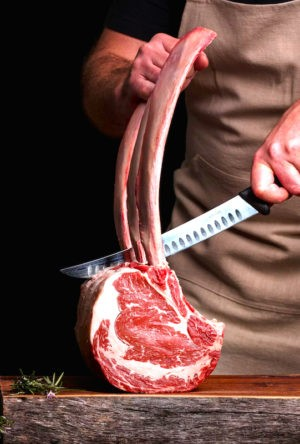

Boucher-charcutier aux Deux Routes depuis 2019
La viande d'ici, coupée devant vous.
et la charcuterie de la maisonAu bord de la RN88, à Saint-Maurice-de-Lignon, Cédric Paulin et son équipe travaillent une viande locale et régionale : bœuf, veau, porc, agneau et volailles. Saucisson, roulés de veau et plats du traiteur sont préparés sur place.

Côte de bœufViande bovine · FranceSur demande
7/7ouvert
tous les jours
tous les jours
Ouvert sept jours sur septDu mardi au samedi de 7h à 19h, le lundi dès 9h et le dimanche matin jusqu'à 12h30.
Viande locale & régionaleBœuf, veau, porc, agneau et volailles choisis chez des éleveurs de la région.
−10 % au 10e passageDemandez votre carte de fidélité en caisse, elle se remplit à chaque achat.
Entrez dans la boutique
par où commencer ?
L'Étal
La vitrine du jour →
Pièces à griller, marinades maison, saucisses et godiveaux : ce que vous trouverez au comptoir, avec les prix au kilo.
Traiteur & Fêtes
La carte du traiteur →
Plats cuisinés, accompagnements, volailles Label Rouge et repas dès 10 personnes.
La Maison
Qui est Augustin ? →
Une boucherie de bord de route devenue une adresse du plateau. Notre histoire et notre façon de travailler.
La règle de la maison
Au comptoir, on vous dit d'où vient la viande, comment la couper et comment la cuire.Un conseil, une découpe sur mesure, un colis pour le congélateur : demandez, c'est notre métier.